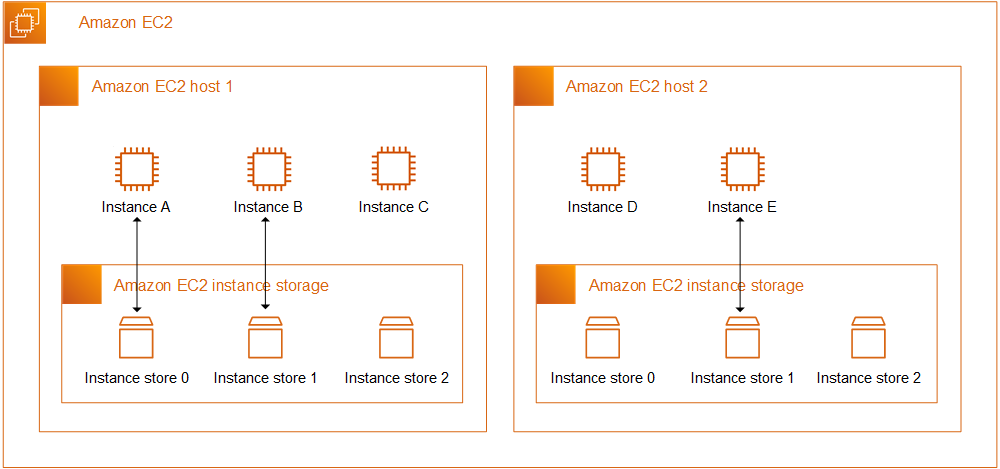
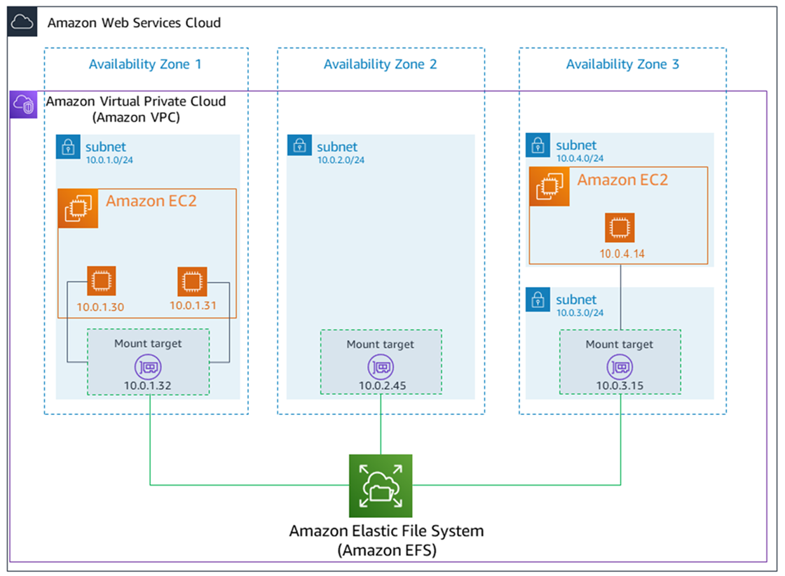

👀시험에서 가장 자주 나오는 비교 포인트
발표자 : 이지호🐯
빠르지만 휘발성인 물리적 디스크
Instance Store는 EC2가 실행 중인 물리 호스트에 종속된 디스크입니다.

여러 서버가 공유하는 네트워크 파일 시스템
EFS는 각 AZ마다 Mount Target를 두고, 여러 EC2 인스턴스가 동시에 접근합니다.

| 특징 | Instance Store | Amazon EFS |
|---|---|---|
| 비유 | 컴퓨터 본체 안에 있는 엄청 빠른 임시 RAM 디스크 | 사무실 사람들이 함께 쓰는 네트워크 공유 폴더 |
| 데이터 수명 | 휘발성 (Ephemeral) – 끄면 삭제됨 | 영구적 – 삭제 전까지 유지됨 |
| 연결성 | 해당 인스턴스 전용 | 수백 개 인스턴스 공유 (Multi-AZ) |
| 주 용도 | 캐시, 임시 데이터, 초고속 연산 | 웹 서버 콘텐츠 공유, 데이터 공유 |
| OS | 모든 OS | Linux 전용 |